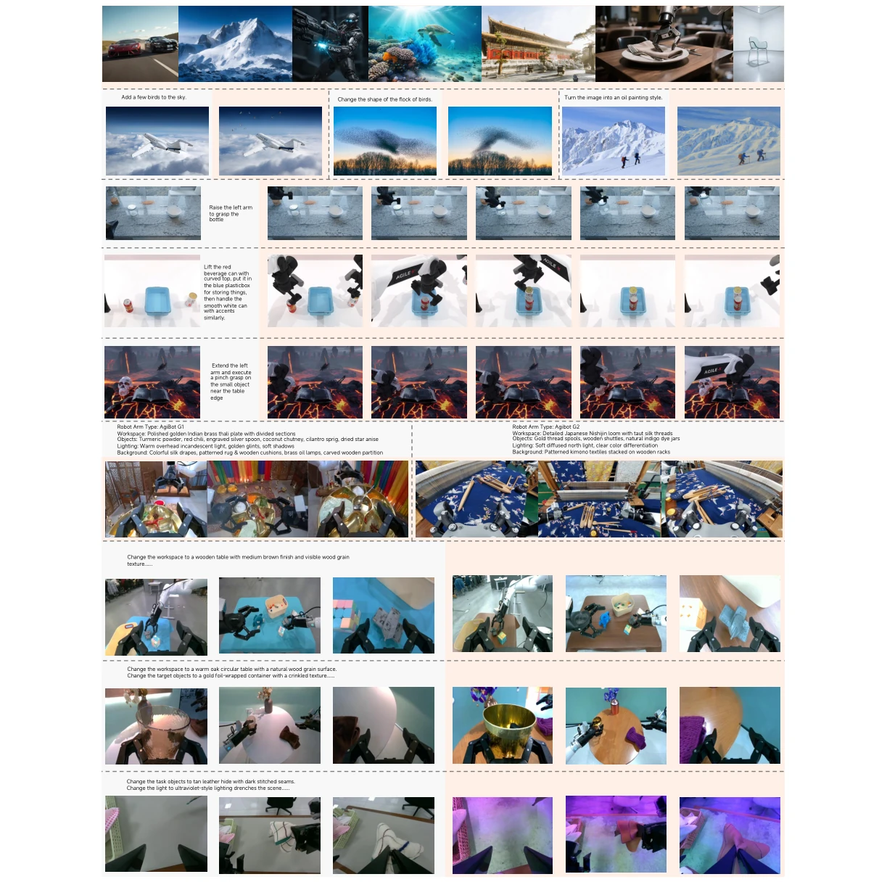
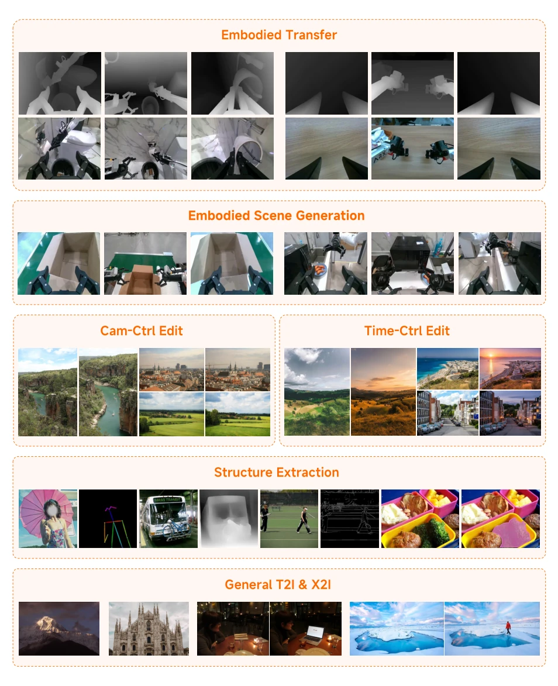
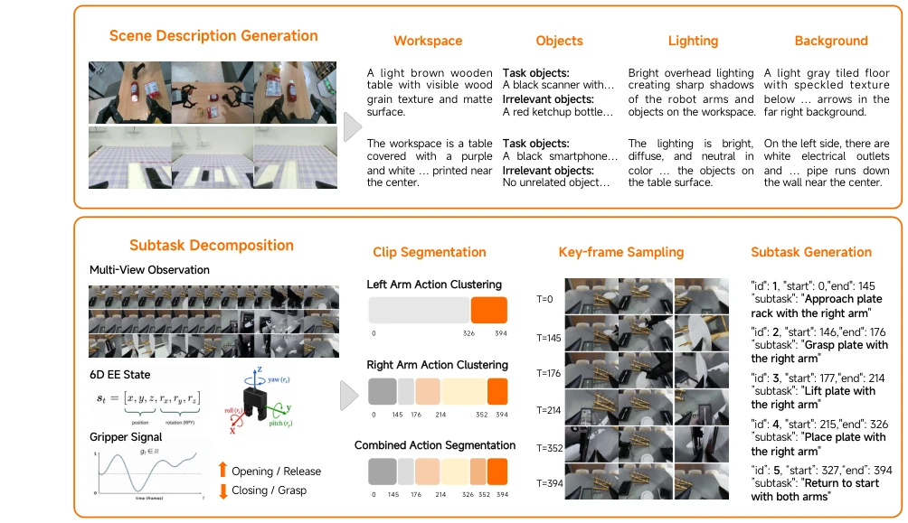
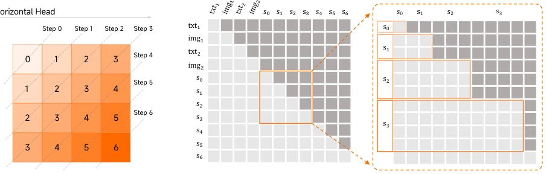
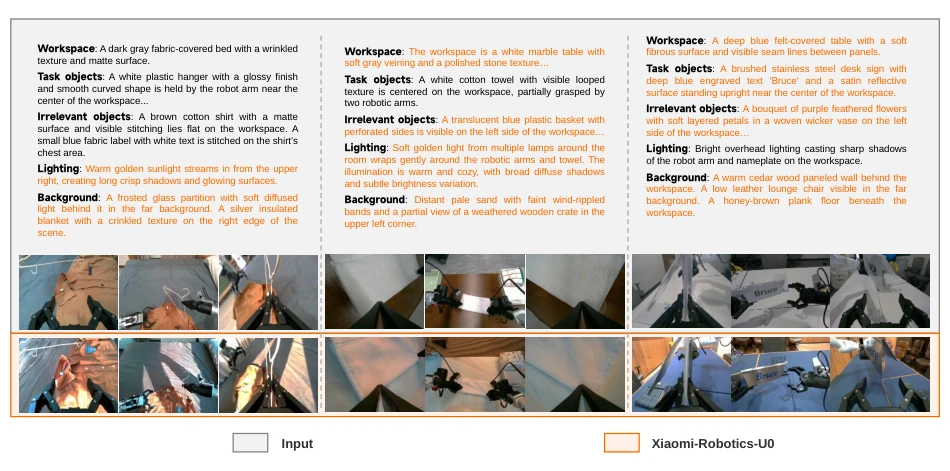
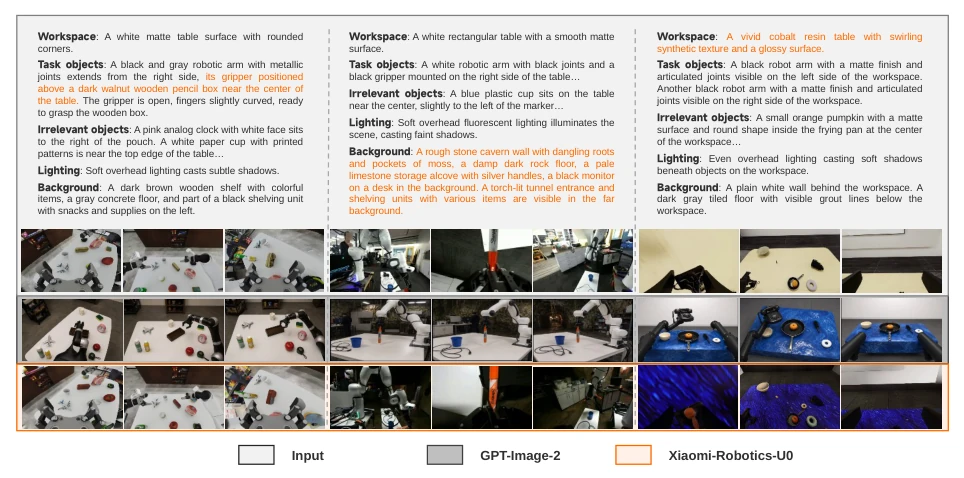
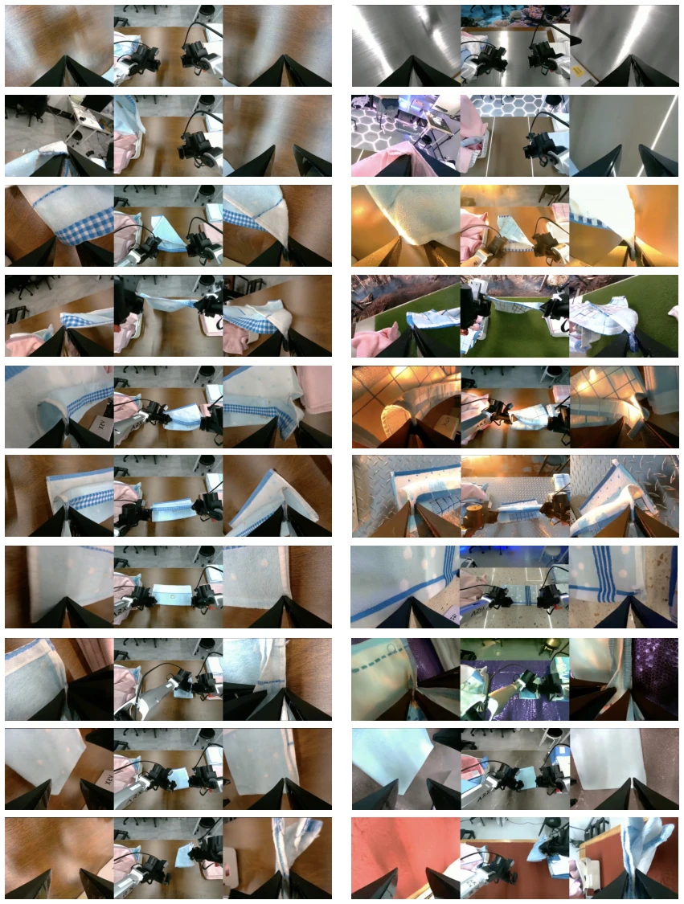

Figure 1 Embodied and general capabilities of Xiaomi-Robotics-U0. The rectangle corresponds to the initial observations for the same embodiment, the pairwise transfer sample, and the keyframes within a video for the embodied capabilities. All frames are referenced and generated images.

Figure 2 Overview of all tasks in Xiaomi-Robotics-U0, Gray: inputs; Orange: outputs.
Figure 3 Overview structure of Xiaomi-Robotics-U0. The model is trained end-to-end at scale with a unified next-token prediction objective. An efficient inference extension is provided along.

Figure 4 The illustration of the constructed single-step generation dataset. Except for the embodied transfer and the embodied scene generation data, we additionally introduce Text-to-Image(T2I) and Any-to-Image(X2I) data for co-training. Concretely speaking, we add camera-control and time-control data to improve the spatial and temporal understanding capability. For structure and geometry perception, we construct skeleton, depth, edge, and semantic mask datasets with advanced computer vision tools. To maintain the ability of the pre-trained model, we introduce general T2I and X2I datasets for co-training.

Figure 5 Overview of the unified data labeling pipeline. The upper part illustrates scene description generation, where each sample is annotated with structured semantic attributes. The lower part shows trajectory-level subtask decomposition, including action-based clip segmentation, key-frame sampling, and subtask generation. This pipeline provides consistent scene, geometry, and action-level supervision across heterogeneous robotic datasets.

Figure 6 Xiaomi-Robotics-U0 FlashAR+ extension for X2I generation. Target image tokens are grouped by diagonal steps, while all input conditions are kept in the prefix and the target image is generated with a step-causal attention mask.
Figure 7 Qualitative and efficiency comparison between AR, FlashAR+, and FlashAR+ with vLLM. FlashAR+

Figure 8 Qualitative results on embodied transfer. For each example we show the scene description, the original multi- view RGB images from which the depth conditions are extracted, and the images generated by Xiaomi-Robotics-U0. Starting from the original images, we estimate their multi-view depth maps and edit the scene description (edited text highlighted); the depth maps together with the edited description are then fed to Xiaomi-Robotics-U0, which synthesizes multi-view-consistent RGB images that adhere to both the edited text and the input geometry.

Figure 9 Qualitative comparison between GPT-Image-2 and Xiaomi-Robotics-U0 on the embodied transfer benchmark. GPT-Image-2 generates plausible, well-aligned images but violates the input depth and produces multi-view-inconsistent results, whereas Xiaomi-Robotics-U0 adheres to the geometry of every view and keeps the views mutually consistent.

Figure 10 The zero-shot augmented keyframes of the multi-view manipulation trajectories with the embodied transfer capability of Xiaomi-Robotics-U0. We generate 1000 descriptions for the background, workspace, and lighting condition with Qwen3-VL and replace the original condition randomly. The left panel is the original keyframes, and the right corresponds to the transferred.